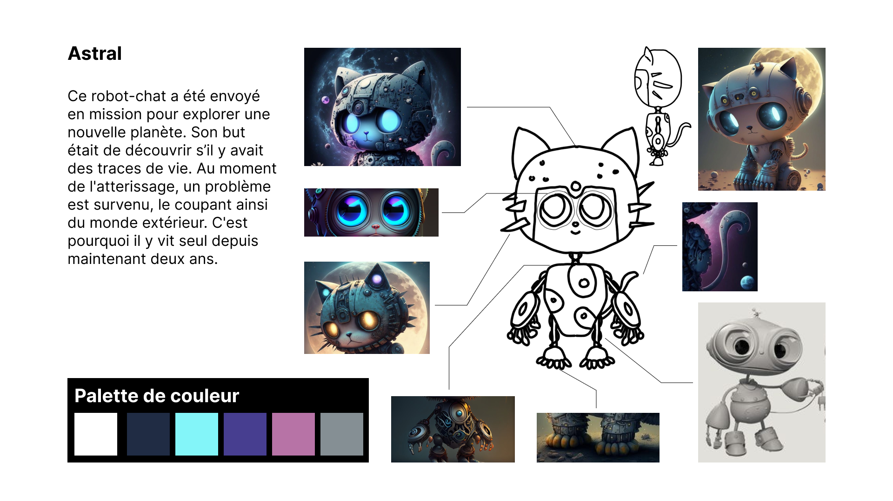

3D
Astral
Ce robot-chat a été envoyé en mission pour explorer une nouvelle planète. Son but était de découvrir s’il y avait des traces de vie. Au moment de l'atterissage, un problème est survenu, le coupant ainsi du monde extérieur. C'est pourquoi il y vit seul depuis maintenant deux ans.
Rôles: scénariste, animatrice et modélisatrice 3D
Logiciel: Maya
Projet individuel


Le processus de création
Les concepts
La modélisation 3D
Abysses
Le plongeur s'aventure dans un nouveau monde marin. Plus il découvre cet univers, plus il réalise qu'il est abandonné à lui-même face à l’immensité du monde qui l’entoure. Une admiration se développe face à toutes ces merveilles qui l'entourent, mais en même temps, un sentiment d’infériorité et de peur vient s'immiscer chez le personnage.
Rôles: scénariste, animatrice et modélisatrice 3D, monteuse
Logiciels: Maya et DavinciResolve
Projet en équipe au niveau de la 3D. De mon côté, j'ai créé et animé le fond marin avec tous ses coraux, la raie, la caméra ainsi que l'ambiance lumineuse.
Projet individuel au niveau du montage.